Getting Started with
scDiagnostics
Anthony Christidis
Core for Computational Biomedicine, Harvard Medical Schoolanthony-alexander_christidis@hms.harvard.edu
Andrew Ghazi
Core for Computational Biomedicine, Harvard Medical SchoolSmriti Chawla
Core for Computational Biomedicine, Harvard Medical SchoolNitesh Turaga
Core for Computational Biomedicine, Harvard Medical SchoolLudwig Geistlinger
Core for Computational Biomedicine, Harvard Medical SchoolRobert Gentleman
Core for Computational Biomedicine, Harvard Medical SchoolSource:
vignettes/scDiagnostics.Rmd
scDiagnostics.RmdPurpose
Annotation transfer from a reference dataset is a key process for annotating cell types in new single-cell RNA-sequencing (scRNA-seq) experiments. This approach provides a quick, automated, and reproducible alternative to manual annotation based on marker gene expression. Despite its advantages, challenges such as dataset imbalance and unrecognized discrepancies between query and reference datasets can lead to inaccurate annotations and affect subsequent analyses.
The scDiagnostics package is designed to address these
issues by offering a suite of diagnostic tools for the systematic
evaluation of cell type assignments in scRNA-seq data. It provides
functionality to assess whether query and reference datasets are
well-aligned, which is crucial for ensuring accurate annotation
transfer. In addition, scDiagnostics helps evaluate
annotation ambiguity, cluster heterogeneity, and marker gene alignment.
By providing insights into these aspects, scDiagnostics
enables researchers to determine the precision with which cells from a
new scRNA-seq experiment can be assigned to known cell types, thereby
supporting more accurate and reliable downstream analysis.
Installation
To install the development version of the package from Github, use the following command:
devtools::install_github("ccb-hms/scDiagnostics")NOTE: you will need the remotes package to install from GitHub.
To build the package vignettes upon installation use:
devtools::install_github("ccb-hms/scDiagnostics",
build_vignettes = TRUE,
dependencies = TRUE)Once you have installed the package, you can load it with the following code:
Preliminaries
To explore the full capabilities of the scDiagnostics
package, you have the option to use your own data or leverage the
datasets included within the scDiagnostics package itself. In this
guide, we will focus on utilizing these built-in datasets, which provide
a practical and convenient resource for demonstrating the features of
scDiagnostics. These datasets are specifically designed to
facilitate the exploration of the package’s functionalities and to help
evaluate the accuracy of cell type assignments. You can learn more about
the datasets by looking at the documentation of the datasets available
in the reference manual.
Loading Datasets
In these datasets available in the scDiagnostics
package, reference_data, query_data, and
qc_data are all SingleCellExperiment objects
that include a logcounts assay, which stores the
log-transformed expression values for the genes.
# Load datasets
data("reference_data")
data("query_data")
data("qc_data")
# Set seed for reproducibility
set.seed(0)The reference_data object is a curated dataset that has
been cleaned and processed, and it contains column data labeled
expert_annotation, which provides cell type annotations
assigned by experts. On the other hand, query_data also
includes expert_annotation, but it additionally features
SingleR_annotation, which is the cell type annotation
generated by the SingleR package, a popular package for
cell type assignment based on reference datasets. The
qc_data object contains a special column called
annotation_scores, which holds the scores from the
SingleR annotations, providing a measure of confidence or
relevance for the assigned cell types.
By working with these datasets, you can gain hands-on experience with the various diagnostic tools and functions offered by scDiagnostics, allowing you to better understand how well it aligns query and reference datasets, assesses annotation ambiguity, and evaluates cluster heterogeneity and marker gene alignment.
Subsetting the Datasets
Some functions in the vignette are designed to work with
SingleCellExperiment objects that contain data from only
one cell type. We will create separate SingleCellExperiment
objects that only CD4 cells, to ensure compatibility with these
functions.
# Load library
library(scran)
library(scater)
# Subset to CD4 cells
ref_data_cd4 <- reference_data[, which(reference_data$expert_annotation == "CD4")]
query_data_cd4 <- query_data_cd4 <- query_data[, which(query_data$expert_annotation == "CD4")]
# Select highly variable genes
ref_top_genes <- getTopHVGs(ref_data_cd4, n = 500)
query_top_genes <- getTopHVGs(query_data_cd4, n = 500)
common_genes <- intersect(ref_top_genes, query_top_genes)
# Subset data by common genes
ref_data_cd4 <- ref_data_cd4[common_genes,]
query_data_cd4 <- query_data_cd4[common_genes,]
# Run PCA on both datasets
ref_data_cd4 <- runPCA(ref_data_cd4)
query_data_cd4 <- runPCA(query_data_cd4)Getting Started with scDiagnostics
The functions introduced in this section represent just a
subset of the functions available in the scDiagnostics
package.
For a complete overview and detailed demonstrations of all the
functions included in the package, please refer to the designated
vignettes. Each vignette is designed to address specific aspects of
scDiagnostics, and this vignette highlights key
functionalities to illustrate their applications. These vignettes
provide in-depth guidance and examples for each function, helping users
fully leverage the capabilities of scDiagnostics in their
single-cell analyses.
Visualization of Query vs. Reference Datasets
For a detailed example of all possible functions to visualize reference and query datasets, please refer to the “Visualization of Cell Type Annotations” vignette.
plotCellTypePCA
The plotCellTypePCA function provides a visual
comparison of principal components (PCs) for different cell types across
query and reference datasets. By projecting the query data onto the PCA
space of the reference dataset, it creates informative plots to help you
understand how various cell types are distributed in the principal
component space.
# Plot PCA data
pc_plot <- plotCellTypePCA(query_data = query_data,
reference_data = reference_data,
cell_types = c("CD4", "CD8", "B_and_plasma", "Myeloid"),
query_cell_type_col = "expert_annotation",
ref_cell_type_col = "expert_annotation")
# Display plot
pc_plot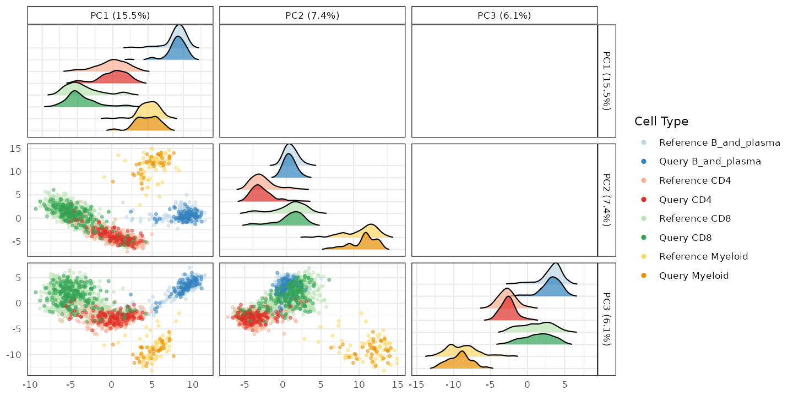
The function returns a ggplot object featuring pairwise
scatter plots of the selected principal components. Each plot compares
how different cell types from the query and reference datasets project
onto the PCA space. This visualization aids in identifying how cell
types distribute across PCs and facilitates comparisons between
datasets.
The reference_data argument contains the reference cell
data, which serves as the foundation for defining the PC space. The
query_data parameter includes the query cell data that will
be projected. The function uses the ref_cell_type_col and
query_cell_type_col to identify the relevant cell type
annotations in the reference and query datasets.
calculateDiscriminantSpace
Alternatively, you can also use the
calculateDiscriminantSpace function, which projects query
single-cell RNA-seq data onto a discriminant space defined by a
reference dataset. This approach helps evaluate the similarity between
the query and reference data, offering insights into the classification
of query cells.
disc_output <- calculateDiscriminantSpace(reference_data = reference_data,
query_data = query_data,
ref_cell_type_col = "expert_annotation",
query_cell_type_col = "SingleR_annotation")The function returns a comprehensive output that includes discriminant eigenvalues and eigenvectors, which represent the variance explained by each discriminant axis and are used to project the data. It also provides the projections of the reference and query data onto the discriminant space. The Mahalanobis distances between the query and reference cell types are calculated, offering insights into how close the query projections are to the reference. The cosine similarity scores provide another metric to assess the similarity between the datasets.
plot(disc_output, plot_type = "scatterplot")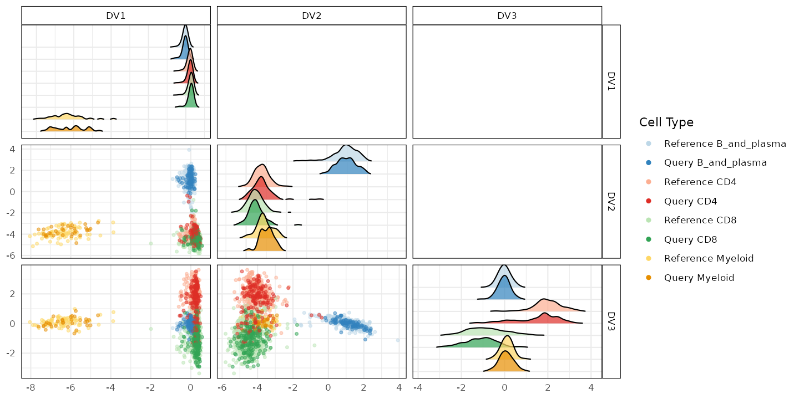 Alternatively, you can create a boxplot comparing query and reference projections for a specific cell type:
plot(disc_output, cell_types = "CD4-CD8", plot_type = "boxplot")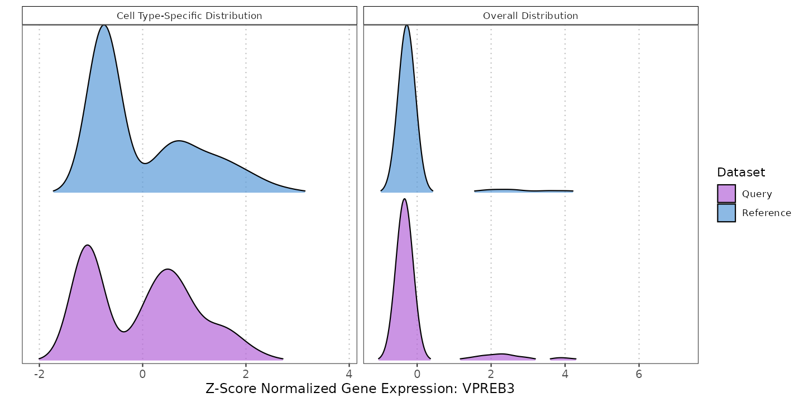
Visualization of Marker Expressions
Visualizing gene expression distributions is crucial for
understanding dataset similarity and cell type-specific expression
patterns. The plotMarkerExpression function allows you to
compare the expression levels of a specific gene between a reference
dataset and a query dataset, both overall and within a specified cell
type. This comparison is done using density plots, which help in
assessing the alignment and potential discrepancies between
datasets.
plotMarkerExpression(reference_data = reference_data,
query_data = query_data,
ref_cell_type_col = "expert_annotation",
query_cell_type_col = "SingleR_annotation",
gene_name = "VPREB3",
cell_type = "B_and_plasma")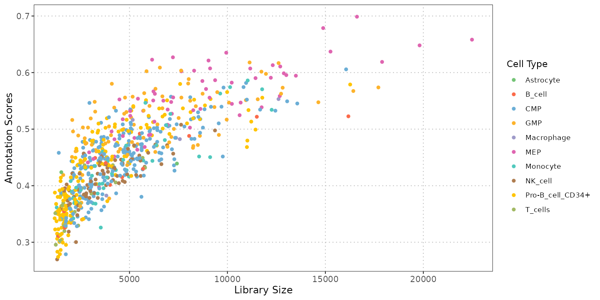
Visualization of QC and Annotation Scores
For a detailed example of all possible functions to visualize quality control and annotation score metrics, please refer to the “Visualization of QC and Annotation Scores” vignette.
Visualizing gene set scores on dimensional reduction plots helps in
understanding how gene set or pathway activity varies across single
cells in reduced dimensional spaces such as PCA, t-SNE, or UMAP. The
plotGeneSetScores function allows you to plot these scores
on the specified reduced dimensions, offering insights into the spatial
distribution of gene set activities in the context of single-cell
data.
plotGeneSetScores(se_object = query_data,
method = "PCA",
score_col = "gene_set_scores")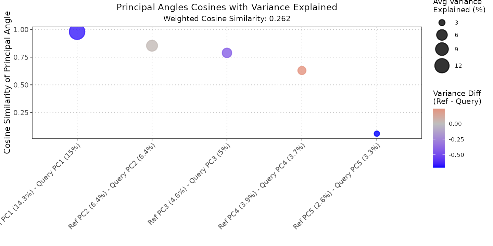
The function returns a ggplot object displaying scatter
plots of gene set or pathway scores on the specified reduced dimensions.
For PCA, the plot includes the percentage of variance explained for each
principal component in the legend.
Evaluation of Dataset and Marker Gene Alignment
For a detailed example of all possible functions to assess the alignment of datasets and marker genes, please refer to the “Evaluation of Dataset and Marker Gene Alignment” vignette.
compareCCA
The compareCCA function is designed to compare the
subspaces spanned by the top principal components (PCs) of two datasets
using Canonical Correlation Analysis (CCA). The function calculates
canonical variables, correlations, and a similarity measure between the
subspaces of the reference and query datasets. This can be useful in
determining the similarity of cell populations or other high-dimensional
data structures across different conditions or datasets.
# Perform CCA comparison
cca_comparison <- compareCCA(query_data = query_data_cd4,
reference_data = ref_data_cd4,
query_cell_type_col = "expert_annotation",
ref_cell_type_col = "expert_annotation")
# Visualize results
plot(cca_comparison) This function is useful for identifying similarities and differences in
cellular subpopulations or other high-dimensional datasets across
different conditions. The combination of CCA with PCA provides a
reliable framework for subspace comparison.
This function is useful for identifying similarities and differences in
cellular subpopulations or other high-dimensional datasets across
different conditions. The combination of CCA with PCA provides a
reliable framework for subspace comparison.
comparePCA
The comparePCA function allows for the comparison of principal components (PCs) obtained from separate PCA analyses on reference and query datasets for a specific cell type. This comparison can be performed using either cosine similarity or correlation metrics, offering insights into the relationship between the subspaces spanned by the PCs of the two datasets.
# Perform CCA comparison
similarity_matrix <- comparePCA(
query_data = query_data_cd4,
reference_data = ref_data_cd4,
query_cell_type_col = "expert_annotation",
ref_cell_type_col = "expert_annotation")
# Visualize the similarity matrix as a heatmap
plot(similarity_matrix)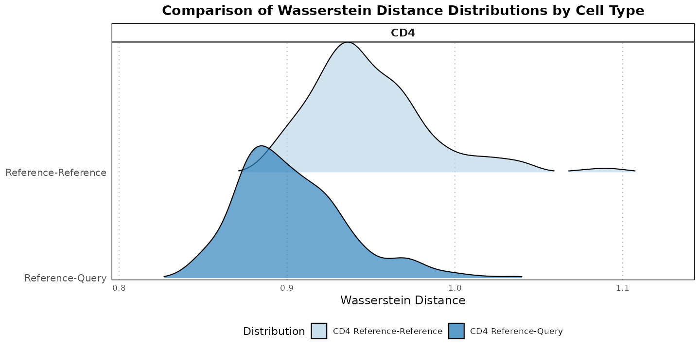 The resulting similarity matrix can be visualized as a heatmap using the plot function. This heatmap provides a clear graphical representation of how similar or different the PCs of the reference and query datasets are, based on the chosen metric.
plotWassersteinDistance
The code below illustrates how to use the
plotWassersteinDistance function to compare the Wasserstein
distances between CD4 cells in the reference and query datasets. The
resulting plot provides insight into whether the differences between the
datasets are statistically significant.
# Generate the Wasserstein distance density plot
plotWassersteinDistance(query_data = query_data_cd4,
reference_data = ref_data_cd4,
query_cell_type_col = "expert_annotation",
ref_cell_type_col = "expert_annotation",
pc_subset = 1:5,
alpha = 0.05)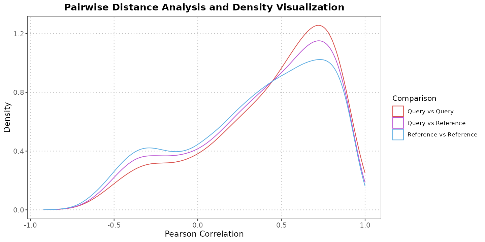
calculateVarImpOverlap
Imagine you have two sets of data: one called reference_data and
another called query_data. Both sets include information about gene
expression and cell types, with columns named
expert_annotation for the reference data and
SingleR_annotation for the query data. You want to find out
which genes are most important for each dataset and then compare
them.
Here’s how you can do it with the function:
# RF function to compare (between datasets) which genes are best at differentiating cell types
rf_output <- calculateVarImpOverlap(reference_data = reference_data,
query_data = query_data,
query_cell_type_col = "SingleR_annotation",
ref_cell_type_col = "expert_annotation",
n_tree = 500,
n_top = 50)
# Comparison table
rf_output$var_imp_comparison
#> B_and_plasma-CD4 B_and_plasma-CD8 B_and_plasma-Myeloid
#> 0.82 0.72 0.34
#> CD4-CD8 CD4-Myeloid CD8-Myeloid
#> 0.72 0.42 0.24Statistical Measures to Assess Dataset Alignment
For a detailed example of all possible functions that implement statistical methods to assess cell type annotation, please refer to the “Statistical Measures to Assess Dataset Alignment” vignette.
calculateAveragePairwiseCorrelation
The calculateAveragePairwiseCorrelation function
computes the average pairwise correlations between specified cell types
in single-cell gene expression data. It calculates pairwise correlations
between query and reference cells using a specified correlation method,
and then averages these correlations for each cell type pair. This
approach helps assess the similarity between cells in reference and
query datasets and provides insights into the reliability of cell type
annotations.
# Compute the average pairwise correlations
cor_matrix_avg <- calculateAveragePairwiseCorrelation(
query_data = query_data,
reference_data = reference_data,
query_cell_type_col = "expert_annotation",
ref_cell_type_col = "expert_annotation",
cell_types = c("CD4", "CD8", "B_and_plasma"),
)
# Visualize the correlation matrix
plot(cor_matrix_avg)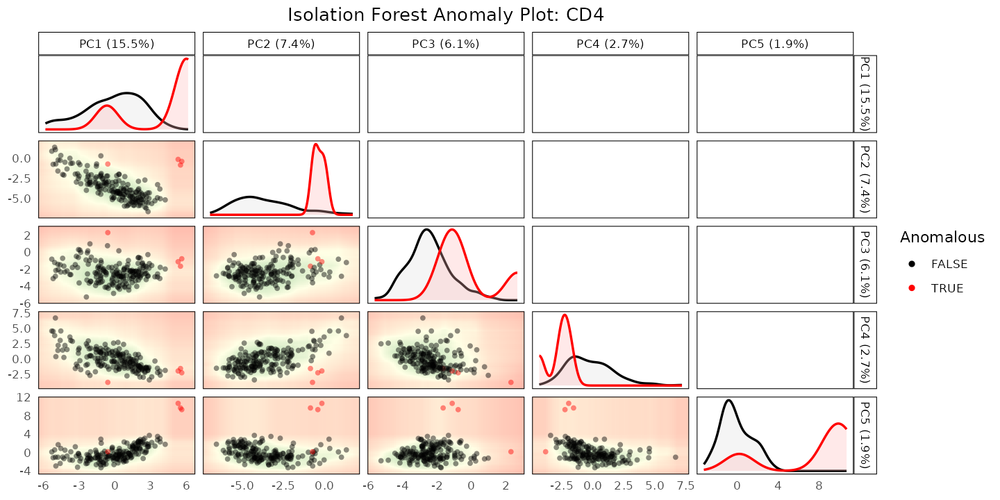 The displays a heatmap where each cell type pair is represented with a color indicating the average correlation value between them. This visualization helps in assessing the similarity between cell types across the query and reference datasets.
regressPC
The regressPC function performs linear regression of a
covariate of interest onto one or more principal components (PCs) based
on the data contained within a SingleCellExperiment object.
This method is useful for quantifying the variance explained by a
covariate, which can be applied to various aspects of single-cell
analysis, such as evaluating batch effects, clustering homogeneity, or
aligning query and reference datasets in cell type annotations.
# Perform PC regression with query data
regress_res <- regressPC(reference_data = reference_data,
query_data = query_data,
ref_cell_type_col = "expert_annotation",
query_cell_type_col = "SingleR_annotation",
cell_types = c("CD4", "CD8", "B_and_plasma", "Myeloid"),
pc_subset = 1:15)
# Plot the results
plot(regress_res, plot_type = "r_squared")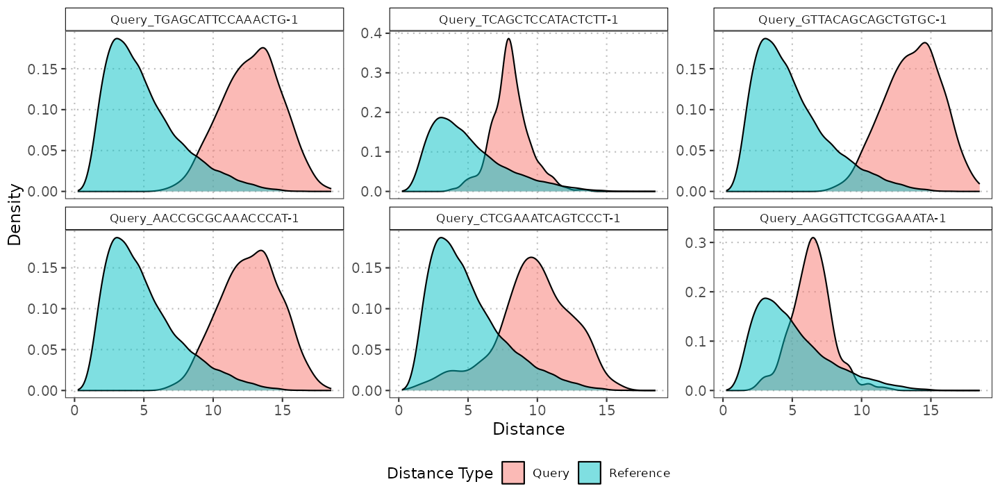
plot(regress_res, plot_type = "p-value")
The function calculates how much variance in the data matrix is explained by a covariate through principal component regression. It computes the R-squared value for each principal component and derives the variance contribution of the covariate for each principal component.
Detection of Annotation Anomalies
For a detailed example of all possible functions that implement statistical methods to assess cell type annotation, please refer to the “Detection of Annotation Anomalies” vignette.
The detectAnomaly function is designed to identify
anomalies in single-cell data by leveraging PCA projections and the
Isolation Forest algorithm. This method is useful for detecting
anomalies or unusual patterns in single-cell datasets, whether you’re
analyzing a reference dataset or comparing a query dataset against
it.
The function projects single-cell data onto a PCA space and builds an Isolation Forest model on this PCA space to detect anomalies. If a query dataset is provided, the function computes anomaly scores for the query data based on its PCA projections relative to the reference data. If no query data is provided, it computes anomaly scores for the reference data itself.
# Perform anomaly detection
anomaly_output <- detectAnomaly(reference_data = reference_data,
query_data = query_data,
ref_cell_type_col = "expert_annotation",
query_cell_type_col = "SingleR_annotation")
# Plot the results for a specific cell type
plot(anomaly_output,
cell_type = "CD4",
data_type = "query",
pc_subset = 1:5)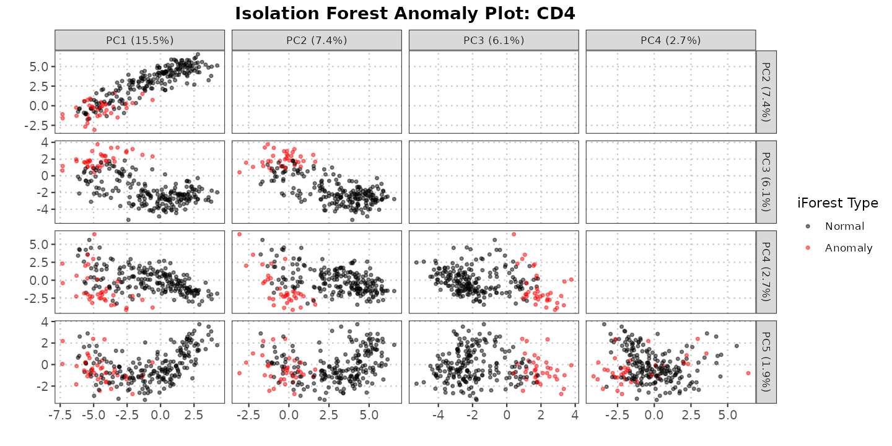
Calculation of Distances Between Specific Cells and Cell Types
For a detailed example of all possible functions to analyze distances between specific cells and cell distributions, please refer to the “Calculation of Distances Between Specific Cells and Cell Types” vignette.
The calculateCellDistances function computes distances
both within a reference dataset and between query cells and reference
cells for each specified cell type. By first projecting data onto a PCA
space, the function calculates Euclidean distances to quantify
similarities and dissimilarities. For each cell type, it generates
pairwise distances within the reference dataset and measures how far
each query cell is from all reference cells. This approach enables
detailed analysis of cell type-specific distances, aiding in the
identification of outliers and other patterns of interest.
To identify anomalous cells within the query data, we first use the
detectAnomaly function, focusing specifically on the CD4
cell type. This function will compute anomaly scores for each CD4 cell
in the query dataset based on their projection in the PCA space of the
reference data. Next, we will plot the distance distributions for the
top 6 CD4 cells with the highest anomaly scores. These distances,
computed using the calculateCellDistances function, will
illustrate how these anomalous cells differ from the reference cells,
providing insight into their potential outlier status and helping to
visualize patterns within the data.
# Identify outliers for CD4
cd4_anomalies <- detectAnomaly(reference_data = reference_data,
query_data = query_data,
query_cell_type_col = "SingleR_annotation",
ref_cell_type_col = "expert_annotation")
cd4_top6_anomalies <- names(sort(cd4_anomalies$CD4$query_anomaly_scores, decreasing = TRUE)[1:6])
# Plot the PC data
distance_data <- calculateCellDistances(query_data = query_data,
reference_data = reference_data,
query_cell_type_col = "SingleR_annotation",
ref_cell_type_col = "expert_annotation")
# Plot the densities of the distances
plot(distance_data, ref_cell_type = "CD4", cell_names = cd4_top6_anomalies)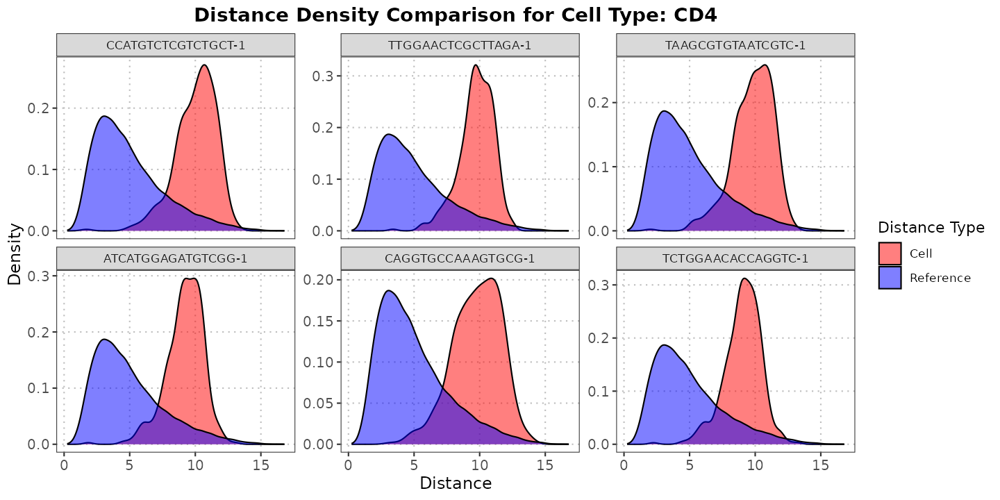
Conclusion
In this vignette, we have introduced the core functionalities of the scDiagnostics package, providing a detailed guide on its use for scRNA-seq data analysis. We started by exploring the basic capabilities, including the visualization of query versus reference datasets through dimensionality reduction techniques. This approach allows for both the evaluation of multiple cell types simultaneously and the comparison of distributions for individual cell types.
We then delved into the visualization of annotation scores, which is essential for assessing the accuracy of cell type assignments. Following this, we discussed statistical methods for evaluating annotation precision. This includes assessing correlation between cell types and performing statistical tests to compare two datasets, offering a rigorous approach to validate cell type classifications.
The vignette also covered techniques for detecting annotation anomalies, crucial for identifying and addressing potential issues that could impact data validity. Additionally, we explored cell distance diagnostics, focusing on analyzing distances between specific cells and various cell populations or distributions to better understand internal relationships and variations.
Overall, this guide equips you with practical tools and methods to enhance the reliability and accuracy of your scRNA-seq data analysis using scDiagnostics, paving the way for more informed and meaningful biological interpretations.
R Session Info
R version 4.4.0 (2024-04-24 ucrt)
Platform: x86_64-w64-mingw32/x64
Running under: Windows 11 x64 (build 22631)
Matrix products: default
locale:
[1] LC_COLLATE=English_United States.utf8
[2] LC_CTYPE=English_United States.utf8
[3] LC_MONETARY=English_United States.utf8
[4] LC_NUMERIC=C
[5] LC_TIME=English_United States.utf8
time zone: America/New_York
tzcode source: internal
attached base packages:
[1] stats4 stats graphics grDevices utils datasets methods
[8] base
other attached packages:
[1] scater_1.32.0 ggplot2_3.5.1
[3] scran_1.32.0 scuttle_1.14.0
[5] SingleCellExperiment_1.26.0 SummarizedExperiment_1.34.0
[7] Biobase_2.64.0 GenomicRanges_1.56.0
[9] GenomeInfoDb_1.40.1 IRanges_2.38.0
[11] S4Vectors_0.42.0 BiocGenerics_0.50.0
[13] MatrixGenerics_1.16.0 matrixStats_1.3.0
[15] scDiagnostics_0.99.6 BiocStyle_2.32.0
loaded via a namespace (and not attached):
[1] DBI_1.2.2 gridExtra_2.3
[3] rlang_1.1.3 magrittr_2.0.3
[5] compiler_4.4.0 DelayedMatrixStats_1.26.0
[7] systemfonts_1.1.0 vctrs_0.6.5
[9] pkgconfig_2.0.3 crayon_1.5.2
[11] fastmap_1.2.0 XVector_0.44.0
[13] labeling_0.4.3 utf8_1.2.4
[15] rmarkdown_2.27 UCSC.utils_1.0.0
[17] ggbeeswarm_0.7.2 ragg_1.3.2
[19] purrr_1.0.2 xfun_0.44
[21] bluster_1.14.0 zlibbioc_1.50.0
[23] cachem_1.1.0 beachmat_2.20.0
[25] jsonlite_1.8.8 highr_0.11
[27] DelayedArray_0.30.1 BiocParallel_1.38.0
[29] irlba_2.3.5.1 parallel_4.4.0
[31] cluster_2.1.6 biglm_0.9-3
[33] R6_2.5.1 bslib_0.7.0
[35] ranger_0.16.0 limma_3.60.2
[37] jquerylib_0.1.4 Rcpp_1.0.12
[39] bookdown_0.39 knitr_1.46
[41] Matrix_1.7-0 igraph_2.0.3
[43] tidyselect_1.2.1 rstudioapi_0.16.0
[45] abind_1.4-5 yaml_2.3.8
[47] viridis_0.6.5 codetools_0.2-20
[49] lattice_0.22-6 tibble_3.2.1
[51] withr_3.0.0 evaluate_0.23
[53] desc_1.4.3 pillar_1.9.0
[55] BiocManager_1.30.23 generics_0.1.3
[57] sparseMatrixStats_1.16.0 munsell_0.5.1
[59] scales_1.3.0 glue_1.7.0
[61] metapod_1.12.0 tools_4.4.0
[63] speedglm_0.3-5 data.table_1.15.4
[65] BiocNeighbors_1.22.0 ScaledMatrix_1.12.0
[67] locfit_1.5-9.9 fs_1.6.4
[69] grid_4.4.0 edgeR_4.2.0
[71] colorspace_2.1-0 GenomeInfoDbData_1.2.12
[73] beeswarm_0.4.0 BiocSingular_1.20.0
[75] vipor_0.4.7 cli_3.6.2
[77] rsvd_1.0.5 textshaping_0.4.0
[79] fansi_1.0.6 viridisLite_0.4.2
[81] S4Arrays_1.4.1 dplyr_1.1.4
[83] gtable_0.3.5 isotree_0.6.1-1
[85] sass_0.4.9 digest_0.6.35
[87] SparseArray_1.4.8 ggrepel_0.9.5
[89] dqrng_0.4.1 farver_2.1.2
[91] htmlwidgets_1.6.4 memoise_2.0.1
[93] htmltools_0.5.8.1 pkgdown_2.0.9
[95] lifecycle_1.0.4 httr_1.4.7
[97] transport_0.15-2 statmod_1.5.0
[99] MASS_7.3-60.2